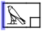
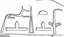

Dots
The black dot is rendered by the capital letter "O" and the red dot by the small letter "o". NOTE: These are not verse points, but dots with an uncertain meaning found sometimes in hieratic texts.
Cartouches
A cartouche is an oval form surrounding a word:  It
is to be entered by <-G7->.
It
is to be entered by <-G7->.
Serekhs
A serekh  is to be entered with <S-G7->.
is to be entered with <S-G7->.
Hw.t-sign
A sign enclosed in a rectangular enclosure (Gardiner's O6) is to be entered with <H-G5->.
Haplographies
Haplographies are encoded normally at the position of the first occurrence. In the further occurrence they are to be encoded in double angle brackets: [&-[&- + Hieroglyph + -&]-&] . E.g. in this case  the sign X8 should be written twice, so it needs to be inserted into double angle brackets in the position where it should occur for the second time: M23-X1 R4 X8 [&-[&-X8-&]-&] E15 R4.